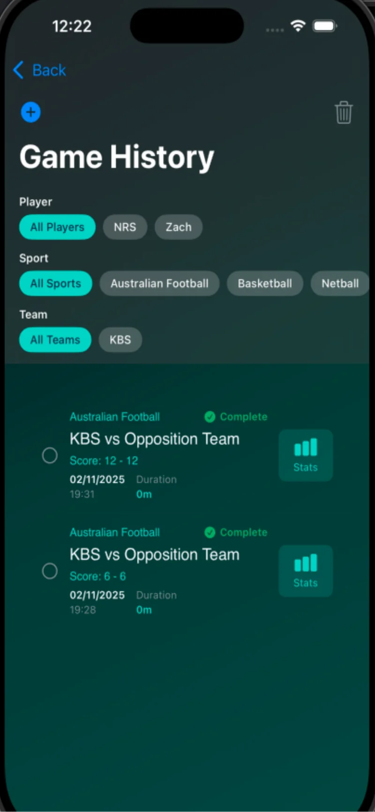
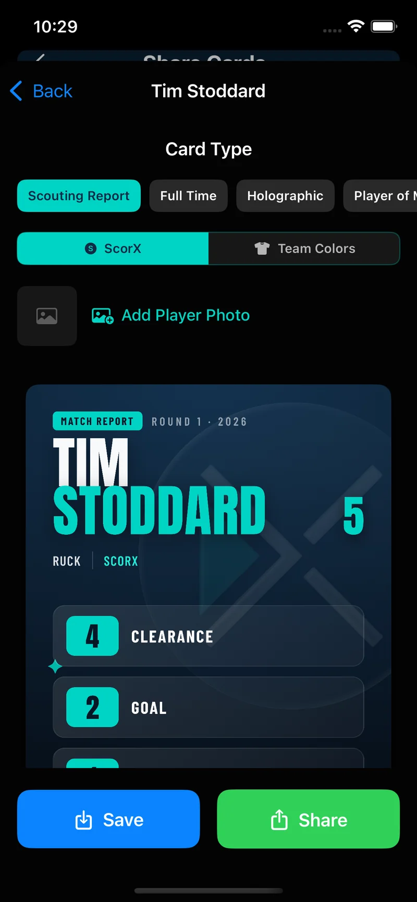
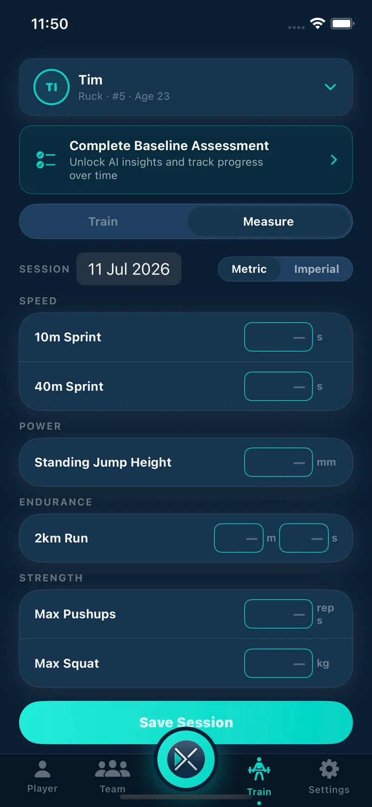
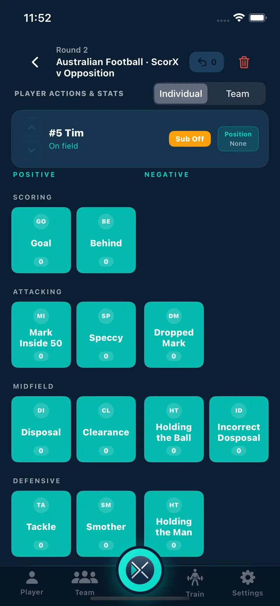
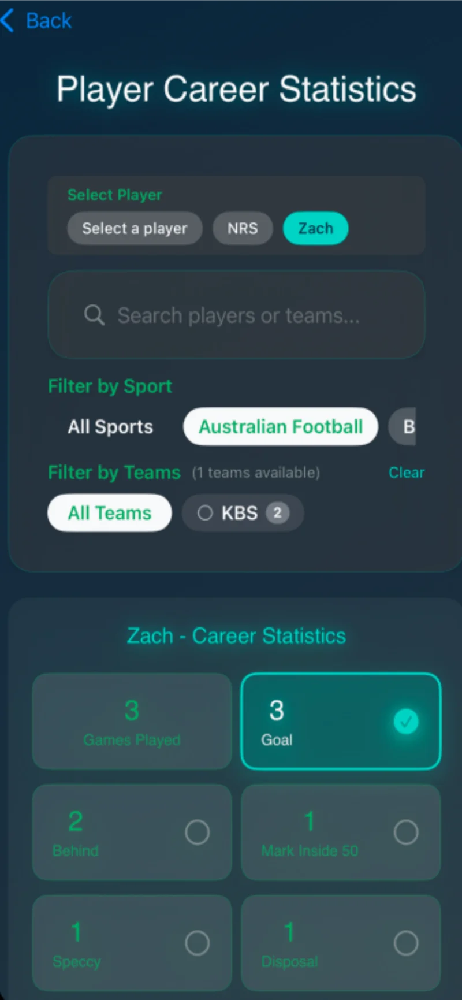
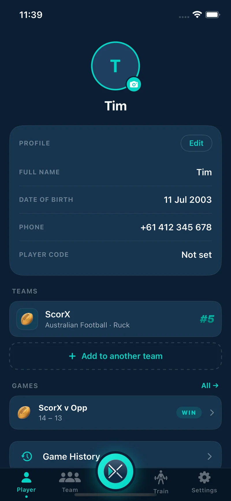
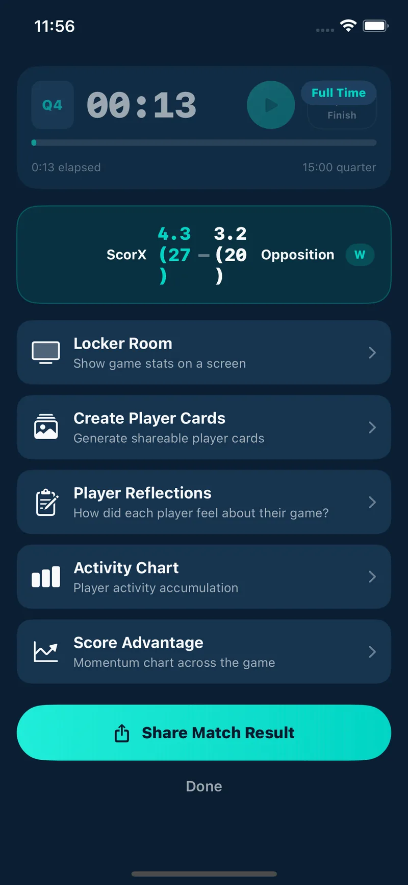

{% if post.category %}
{{ post.category }}
{% endif %}
{{ post.title }}
{{ post.excerpt | strip_html | truncatewords: 28 }}
Read more →ScorX keeps your whole sporting record in one place: every game, every stat, every highlight worth sharing. Then it helps you use it. Measure where you are, set a goal, follow a plan with drills, and re-test to show yourself you are improving.
Every match recorded, every action timestamped, every good day saved. Free keeps up to 20 saved games, and Premium has no game limit.
Free
Most athletes finish a season with a rough memory of it. A big final, one blinder of a game, and a blur in between. ScorX keeps the actual record, so five years from now there is still a page for the day everything clicked.

Free one style Premium full library
Player Cards turn a good game into something you can share — your photo, your numbers, your day. It is what makes the recording habit stick long enough for the development side to matter.

Five steps in the Train tab, and the last one sends you back to the first. All of it is free.
Free
Log a baseline for speed, power, endurance and strength. There are 14 baseline metrics, plus one custom metric of your own. Save the results and you have a starting point you can point at, instead of a guess.
Your age and sex benchmarks show where each number sits.

Free
Pick a metric and set a target for it. Goal mode draws a goal line on your progress chart, so you can see the gap and watch it close.
Choose something you can work on this month, such as a faster 40m or a better 2km.
Free
Your Development Plan holds one big goal, the skills you want to work on, an outcome goal and a strength and conditioning goal. Each skill gets two drills.
The big goal is your BHAG: one goal for you as a player that the rest of the plan points at.
Free
Open a skill to see its two drills, then put them into a Training Session. Save the drills you like as favourites. The Beep Test and the 800m and 2km time trials are free run drills too.
Premium adds the full run drill library, with sprint and interval drills.
Free
After a few weeks of work, test again. Your chart shows the trend against your goal line. Hit it, and set the next one. Not there yet, and you know where to keep going.
That loop is the whole plan.
New to this? Read when to start an individual development plan and five development goals to set at the start of a season.
Before any goal is worth setting, you need an honest starting point, on the field and off it.
Free
Totals tell you how much. The timeline tells you when — and that is usually where the development conversation actually is.

Free
The same measurements academies take on a testing day, kept privately by you instead of on someone else's clipboard.
More on this: why performance academies run testing days.
Free
A 40m time on its own is a number. Against age and sex benchmarks it becomes a decision about where your next block of work should go.
AI training recommendations built from your data, not a generic drill list off the internet. Your Development Plan stays free.
Premium
AI training recommendations read your game stats, your own post-game reflections and your athleticism metrics, then say what to work on and why, in plain language you can act on.

Premium
A plan rewritten after every bad game is not a plan. ScorX deliberately waits for enough evidence before changing your recommendations.
Coaches get the team-level version of this in the free post-game triage dashboard.

The payoff for the planning is being able to show it — to a coach, to a selector, and to yourself.
Free
Every sport, every season, every club, in one visual run. You will change teams, codes and coaches along the way — the timeline is the one thing that follows you through all of it.

Premium
At the end of a season, the numbers get turned back into a story — what improved, what to chase next, and how this year compared to last.

Scoring, tracking and training tools are free forever. Premium removes the limits and adds AI training recommendations.
| For athletes | Free | Premium |
|---|---|---|
| Game history & per-game stats | Up to 20 saved games | Unlimited |
| Activity timeline | ✓ | ✓ |
| 14 athleticism metrics, trends & benchmarking | ✓ | ✓ |
| Custom metrics | 1 | Unlimited |
| Development Plan, goals, drills & Training Sessions | ✓ | ✓ |
| Run drills | Beep Test, 800m, 2km | Full library, plus custom |
| Career Timeline | ✓ | ✓ |
| Player Cards | 1 style | Full library |
| AI training recommendations | — | ✓ |
| Season Narratives, PDF/CSV export & iCloud sync | — | ✓ |
ScorX Free covers up to 5 teams, 25 players and 20 saved games. Premium is A$4.99/month or A$49.99/year with a 30-day free trial and no credit card required. Full detail on the pricing page.
An individual development plan is a short, written answer to three questions: where you are now, what one or two things you are working on next, and how you will know it worked. It does not need to be formal. In ScorX you build it in the Development Plan in the Train tab: one big goal, the skills you want to work on with two drills each, an outcome goal and a strength and conditioning goal. You measure your starting point, set a target, and re-test to check it is working.
Pick goals tied to actions you control and that get recorded every game, such as disposals under pressure, defensive efforts, shot accuracy or time on the ball, rather than goals tied to the scoreboard or selection. ScorX records those actions game by game, so a goal like "more contested possessions in the second half" can be checked against your activity timeline instead of debated in the car on the way home. For the physical side, goal mode lets you set a target for a metric and shows a goal line on your progress chart.
The Development Plan is yours to set, and it is free. You choose the skills and drills, and your recorded games and re-tests show whether it is working. ScorX Premium adds AI training recommendations, which read your game statistics, your own reflections and your athleticism metrics, then name a primary and secondary focus area with the evidence behind it. They update after 30 days or five new games, so a single bad game never rewrites your plan.
There are 14 baseline athleticism metrics across speed, power, endurance and strength, plus one custom metric of your own on ScorX Free (Premium allows unlimited custom metrics). Recording and re-testing is free, and every metric has a trend and a progress chart so you can see your improvement. Age and sex benchmarking, which shows where you sit against age and sex averages, is also free.
Player Cards are generated from your game stats and profile photo, ready to share to Instagram, WhatsApp or the family group chat. One standard card style is free for everyone. ScorX Premium unlocks the full library, including classic, modern, sport-specific and sticker formats, plus custom colour themes and a full card configurator.
Stats and highlights are there from your first game. Meaningful trends usually need about five games or a re-test of your athleticism metrics, which is roughly a month of a normal junior season. That is why ScorX Premium refreshes your AI training recommendations after 30 days or five games rather than after every match.
No. You can record games, measure your athleticism and build a development plan on your own, or have a parent or coach tap in the scoring from the sideline. If your coach also uses ScorX, match invitations let stat recording be shared during games, and your history still belongs to you across clubs, teams and seasons.
Your game history with per-game stat breakdowns and activity timelines, 14 athleticism metrics with trends and age and sex benchmarking, the Development Plan with drills and goals, the Career Timeline, and one standard Player Card style. ScorX Free covers up to 5 teams, 25 players and 20 saved games. ScorX Premium (A$4.99/month or A$49.99/year, with a 30-day free trial and no card needed) removes those limits and adds AI training recommendations, the full run drill library, the full card library, Season Narratives, PDF and CSV export and iCloud sync.
Download free, record your first game, and measure your starting point. Premium is there when you want the limits lifted and AI training recommendations.
Download FreeGuides and performance insights to help you train with purpose and measure real progress.
{{ post.excerpt | strip_html | truncatewords: 28 }}
Read more →